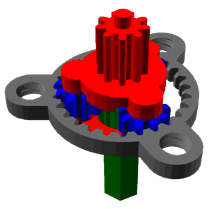
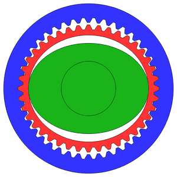
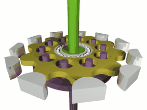

최초작성 2026-02수치 업데이트 2026-07-22 (기준주가 66,000원, 07-21 종가)
현재가
66,000원
52주 22,500 ~ 165,700원
시가총액
1조 4,634억원
발행주식수 약 2,217만 주
트레일링 PER
114배
25년 순이익 128억 기준
29F PER (BULL)
23.7배
1회사 개요
1.1 기본 정보 · 1.2 핵심 사업모델 · 1.3 주요 제품군
1.1.기본 정보
에스피지(SPG)는 1991년 설립된 이래 소형 기어드 모터 분야에서 독보적인 기술력을 축적해온 대한민국 기업임. 2002년 코스닥 시장에 상장되었으며, 산업용 기계, 가전, 의료기기 등에 필수적으로 활용되는 구동 부품을 전문적으로 생산함.
1.2.핵심 사업모델
동사의 수익 구조는 전기에너지를 기계적 회전 에너지로 변환하는 '모터'와 해당 회전 속도를 조절하여 토크(Torque)를 증폭시키는 '감속기'를 일체화한 기어드 모터(Geared Motor) 솔루션에 기반함.
3,500종 이상의 표준 모터 라인업을 보유하여 다양한 전방 산업에 대응하고 있으며, 이를 통해 확보된 안정적인 현금 흐름을 로봇용 고정밀 감속기 연구개발에 재투자하는 순순환 구조를 구축함.
특히 일본 기업이 독점하던 정밀 감속기(SH, SR 감속기) 시장에서 국내 최초로 전 라인업 양산에 성공하며 고부가가치 로봇 부품사로의 체질 개선을 본격화하고 있음.
1.3.주요 제품군
매출 구성을 살펴보면 전통적인 산업용 및 가전용 모터가 주를 이루나, 최근 정밀 감속기의 기여도가 가파르게 상승하고 있음.
제품군
주요 용도 및 특징
주요 납품처
매출 비중 (%)
표준 AC 모터
가전용, 산업용, 의료용 (표준AC, Shaded pole 등)
삼성, LG, GE, Whirlpool
36.6
BLDC 모터류
가전용(냉장고, 건조기 등), 고효율 구동
Bosch, Electrolux, Stryker
21.6
단독형 모터 및 컨트롤러
주문 사양 및 단독형 제품, 자동화, 로봇 등
국내 및 글로벌 기계업체
21.1
정밀 감속기 및 기타
로봇용(SH, SR, 유성), 반도체 장비 등
레인보우로보틱스, 반도체 장비
14.0
표준 DC 모터
소형 구동, 휴대성 및 속도제어 정밀 제어
의료기기 및 산업기기 업체
6.7
2주주 구성 및 리스크
2.1 지분 구조 · 2.2 희석 요인 및 오버행 이슈
2.1.지분 구조
동사의 지분 구조는 최대주주 및 특수관계인이 약 38.45%를 보유하여 경영권의 안정을 기하고 있음.
주주명
관계
보유 주식수
지분율 (%)
이준호
본인 (최대주주)
4,463,558
20.13
이상현
특수관계인
2,272,769
10.25
이은지
특수관계인
976,445
4.40
이현지
특수관계인
812,902
3.67
합계
8,525,674
38.45
2.2.희석 요인 및 오버행(Overhang) 이슈
현재 공시 자료상 미상환된 전환사채(CB)나 신주인수권부사채(BW) 등 대규모 잠재적 희석 물량은 확인되지 않음.
3사업 분석 (Key Driver)
3.1 부문별 현황 및 전방 산업 분석 · 3.2 투자 포인트 및 기술적 해자
3.1.부문별 현황 및 전방 산업 분석
에스피지의 사업 부문은 크게 '전통적인 표준 모터'와 '성장 동력인 정밀 감속기'로 구분됨. 전방 산업인 가전 및 자동화 시장의 성숙도와 로봇 시장의 폭발적 성장이 동사의 포트폴리오 변화를 이끌고 있음.
3.1.1. 가전 및 산업 자동화 모터
동사 매출의 60% 이상은 가전용 모터에서 발생함. 냉장고의 얼음 디스펜서, 공기청정기, 의류건조기 등에 들어가는 소형 기어드 모터 시장에서 강점을 보유함.
한국(36.0%), 중국(27.4%), 미주(27.1%)로 균형 잡힌 매출 지역 구성을 보이고 있으며, 삼성전자, LG전자, GE, Whirlpool 등 글로벌 핵심 기업들을 고객사로 확보함.
최근 가전 산업의 저성장 기조에도 불구하고, 고효율 BLDC 모터로의 교체 수요와 프리미엄 가전 시장의 확대로 인해 연간 3~5% 수준의 안정적인 성장을 유지하고 있음.
3.1.2. 로봇용 정밀 감속기 (Growth Driver)
로봇 산업의 핵심 부품인 감속기 시장은 과거 일본의 Harmonic Drive Systems(HDS)와 Nabtesco가 각각 소형과 대형 시장을 양분해옴.
에스피지는 2020년경부터 SH(Strain Wave) 감속기와 SR(RV) 감속기의 국산화에 성공하며 시장에 진입함. 정밀 감속기 매출은 2024년 약 130억 원을 기록한 것으로 추정되며, 2025년 300억 원, 2027년 500억 원 이상의 매출을 목표로 공격적인 시장 확대를 꾀하고 있음.
3.2.투자 포인트 및 기술적 해자 (Moat)
3.2.1. 국내 유일의 감속기 전 라인업 양산 능력
에스피지는 유성, SH, SR 감속기 3종을 모두 생산할 수 있는 전 세계 유일의 기업임. 일본 경쟁사들이 특정 분야(HDS-SH, Nabtesco-SR)에 편중된 것과 대조적으로, 에스피지는 로봇 제조사가 필요로 하는 모든 종류의 감속기를 일괄 공급할 수 있는 토털 솔루션 역량을 갖춤. 이는 고객사의 설계 편의성을 높이고 조달 리스크를 줄이는 핵심 경쟁력으로 작용함.

유성(Planetary) 감속기여러 기어가 태양기어 주위를 도는 구조 · 높은 강성과 범용성

하모닉(SH) 감속기얇은 플렉스플라인의 탄성 변형 · 초경량·초정밀, 협동·휴머노이드용

RV(SR) 감속기사이클로이드 롤러 구동 · 고강성·고부하, 대형 관절용
원리 애니메이션 출처: Wikimedia Commons — Planetary Gear Animation (Laserlicht, CC0) · HarmonicDriveAni (Jahobr, CC0) · Cycloidal drive (Petteri Aimonen, Public Domain). 각 유형의 작동 개념을 나타낸 것으로 에스피지 실제 제품과 다를 수 있음.
3.2.2. 국산화를 통한 가격 및 납기 경쟁력 극대화
정밀 감속기 시장에서 에스피지의 최대 강점은 비용 효율성임. 일본산 대비 약 40% 이상의 가격 경쟁력을 확보하고 있으며, 수입 시 최대 1년까지 소요되던 납기를 국내 생산을 통해 1개월 이내로 단축시킴. 이는 로봇 양산을 준비하는 국내외 로봇 기업들에게 유인책이 되고 있으며, 기술 검증(PoC) 이후 본격적인 수주 확대의 기반이 됨.
3.2.3. '피지컬 AI' 및 협동로봇 시장의 확산 수혜
최근 로봇 산업은 AI가 물리적 형태를 갖춘 '피지컬 AI'로 진화하며 제조, 물류, 가사 등 전 방위로 확산 중임. 특히 협동로봇 및 휴머노이드 로봇에 필수적인 SH 감속기 수요가 급증하고 있음. 에스피지는 레인보우로보틱스와의 파트너십을 통해 협동로봇 및 휴머노이드용 감속기를 공급하고 있으며, 삼성전자의 '봇핏(BotFit)' 구동 모듈 수주 등 대형 고객사의 핵심 서플라이 체인에 안착함.
4재무 추정 (Financial Projection)
2026-07-22 시가총액(1조 4,634억) 기준 수치 업데이트
회사의 현재 PER은 114배이며, 29년 포워드 기준으로도 26배에 달해 오버벨류에이션 구간에 진입한 것으로 보임.
25년 정밀감속기 판매량과 회사의 목표 판매량을 종합하여 26년은 약 13만대, 이후 점진적으로 증가해서 29년에는 33만대까지 생산하는 것으로 반영하였고, 정밀감속기 가격은 현재 시장 수준에서 점진적으로 상승하는 것으로 가정함.
영업이익률은 정밀감속기 부문 20%, 기존사업부문은 기존 이익률을 점진적으로 증가시키는 정도로 반영하였고 당기순이익은 영업이익에 법인세 등 제반 비용 감안하여 70%로 일괄 반영함.
연도
BASE 순이익(억)
BASE PER
BULL 순이익(억)
BULL PER
2024(A)
131
111.7
131
111.7
2025(E)
128
114.3
128
114.3
2026(E)
190
77.1
187
78.4
2027(E)
415
35.3
457
32.0
2028(E)
484
30.2
543
26.9
2029(E)
562
26.0
618
23.7
주: 시가총액 1조 4,634억(2026-07-21 종가 66,000원) 기준 재계산. 가정·수식은 원본 엑셀 모델 그대로이며 시가총액 셀만 교체함.
BULL CASE로 수정하여 정밀 감속기의 판매량을 회사의 선언 수치만큼 반영하고, 이익률을 상승시켰음에도 불구하고 여전히 PER은 23.7배 수준임.
성장성 좋은 제조업의 PER VALUE 25배 멀티플 부여하면 현재 주가 수준이 적정 주가 수준인 것으로 판단함.
Equity Analysis · KOSDAQ 058610
SPG Co. (058610) Equity Analysis
Original Feb 2026Figures updated 2026-07-22 (ref. price 66,000 KRW, Jul 21 close)
Share price
66,000KRW
52w range 22,500 – 165,700
Market cap
1,463.4bn KRW
~22.17M shares out
Trailing P/E
114x
On 2025 NP of 12.8bn KRW
29E P/E (Bull)
23.7x
1Company Overview
1.1 Basic information · 1.2 Core business model · 1.3 Main product lines
1.1.Basic Information
SPG Co. is a Korean company that has accumulated unrivaled expertise in small geared motors since its founding in 1991. Listed on KOSDAQ in 2002, it specializes in drive components essential to industrial machinery, home appliances, and medical devices.
1.2.Core Business Model
The company's revenue structure is based on a geared-motor solution that integrates a "motor," which converts electrical energy into mechanical rotational energy, with a "reducer," which adjusts rotational speed to amplify torque.
With a lineup of more than 3,500 standard motors serving a wide range of downstream industries, SPG reinvests the stable cash flow they generate into R&D for high-precision robot reducers — a virtuous-cycle structure.
Notably, in the precision-reducer market (SH and SR reducers) long monopolized by Japanese firms, SPG became the first Korean company to succeed in mass-producing the full lineup, accelerating its transformation into a high-value-added robot-parts company.
1.3.Main Product Lines
Traditional industrial and appliance motors still make up the bulk of revenue, but the contribution of precision reducers has been rising sharply.
Product line
Main uses / characteristics
Key customers
Rev. share (%)
Standard AC motors
Appliance, industrial, medical (standard AC, shaded-pole, etc.)
SPG's business divides into "traditional standard motors" and the "growth engine of precision reducers." The maturity of the downstream appliance/automation markets and the explosive growth of the robot market are driving the portfolio shift.
3.1.1. Appliance & Industrial-Automation Motors
More than 60% of revenue comes from appliance motors. SPG is strong in small geared motors used in refrigerator ice dispensers, air purifiers, and clothes dryers.
Revenue is geographically balanced across Korea (36.0%), China (27.4%), and the Americas (27.1%), with global anchor customers including Samsung Electronics, LG Electronics, GE, and Whirlpool.
Despite the recent low-growth trend in appliances, replacement demand for high-efficiency BLDC motors and the expansion of the premium-appliance market sustain stable annual growth of 3–5%.
3.1.2. Robot Precision Reducers (Growth Driver)
The reducer market — the core component of the robot industry — was historically split between Japan's Harmonic Drive Systems (HDS) and Nabtesco, dominating the small and large segments respectively.
SPG entered the market around 2020 by successfully localizing SH (strain-wave) and SR (RV) reducers. Precision-reducer revenue is estimated at roughly 13bn KRW in 2024, with aggressive expansion targets of 30bn KRW in 2025 and over 50bn KRW by 2027.
3.2.Investment Points & Technical Moat
3.2.1. The only maker in Korea mass-producing the full reducer lineup
SPG is the only company in the world capable of producing all three reducer types — planetary, SH, and SR. In contrast to Japanese competitors concentrated in one area (HDS in SH, Nabtesco in SR), SPG offers a total-solution capability, supplying every reducer type a robot manufacturer needs at once. This raises customers' design convenience and lowers procurement risk — a core competitive strength.
Planetary reducerGears orbit a central sun gear · high stiffness, general-purpose
Harmonic (SH) reducerElastic flexing of a thin flexspline · ultra-light & precise, for cobots/humanoids
RV (SR) reducerCycloidal roller drive · high rigidity & load, for large joints
Principle animations: Wikimedia Commons — Planetary Gear Animation (Laserlicht, CC0) · HarmonicDriveAni (Jahobr, CC0) · Cycloidal drive (Petteri Aimonen, Public Domain). Illustrative of each gear type; actual SPG products may differ.
3.2.2. Maximizing price & lead-time competitiveness through localization
SPG's greatest strength in precision reducers is cost efficiency. It holds a price advantage of roughly 40%+ over Japanese product, and has cut delivery lead times — up to a year for imports — to within one month through domestic production. This is a strong draw for Korean and overseas robot companies preparing for mass production, and the foundation for full-scale order expansion after technical validation (PoC).
3.2.3. Benefiting from the spread of 'Physical AI' and collaborative robots
The robot industry is evolving into "physical AI" — AI taking physical form — spreading across manufacturing, logistics, and household domains. Demand for SH reducers, essential to collaborative and humanoid robots, is surging. Through its partnership with Rainbow Robotics, SPG supplies reducers for cobots and humanoids, and has anchored itself in major customers' core supply chains, including the drive-module win for Samsung Electronics' "BotFit."
4Financial Projection
Figures updated on the 1,463.4bn KRW market cap (Jul 22, 2026)
The company's current P/E is 114x, and even on a 2029-forward basis it reaches 26x — the stock appears to have entered overvaluation territory.
Combining 2025 precision-reducer sales volume with the company's targets, the projection reflects ~130k units in 2026, rising gradually to 330k units by 2029; reducer prices are assumed to rise gradually from current market levels.
Operating margin is reflected at 20% for the precision-reducer segment, with the existing business's margin improving gradually; net profit is uniformly taken as 70% of operating profit, accounting for corporate tax and other costs.
Year
Base NP (bn KRW)
Base P/E
Bull NP (bn KRW)
Bull P/E
2024(A)
13.1
111.7
13.1
111.7
2025(E)
12.8
114.3
12.8
114.3
2026(E)
19.0
77.1
18.7
78.4
2027(E)
41.5
35.3
45.7
32.0
2028(E)
48.4
30.2
54.3
26.9
2029(E)
56.2
26.0
61.8
23.7
Note: recomputed on the 1,463.4bn KRW market cap (66,000 KRW close, Jul 21, 2026). Assumptions and formulas are unchanged from the original model workbook; only the market-cap cell was replaced.
Even revising to the BULL CASE — reflecting the company's declared reducer volumes and raising margins — the P/E still stands at around 23.7x.
Granting a 25x P/E multiple appropriate for a high-growth manufacturer, the current share price is judged to be around fair value.
₩에스피지(058610) 주가 차트SPG Co. (058610) Price Chart
인터랙티브 일봉 차트 · 마우스로 줌·이동 · 2026-07-22 기준 스냅샷Interactive daily chart · zoom & pan with the mouse · snapshot as of 2026-07-22
주: 정적 스냅샷(2026-07-22 기준, Yahoo Finance 일봉). 실시간이 아니며 정보 제공용임.Note: static snapshot as of 2026-07-22 (Yahoo Finance daily). Not real-time; for information only.
면책 조항 (Disclaimer)
본 보고서는 작성자 개인의 견해를 담은 정보 제공용 자료이며, 특정 종목의 매수·매도·보유를 권유하거나 유도하기 위한 투자 자문 또는 투자 권유가 아닙니다. 작성자는 공인된 투자자문업자·금융투자업자가 아닙니다.
본 자료는 공개된 자료(DART 공시, 금융정보 제공사, 언론 등)를 바탕으로 작성되었으나 그 정확성·완전성·적시성을 보장하지 않으며, 수치·전망·추정치는 오류를 포함할 수 있고 사전 고지 없이 변경될 수 있습니다. 미래 실적·목표주가 등 전망 정보는 불확실성을 내포하며 실제 결과와 다를 수 있습니다.
작성자는 본 자료에서 다룬 종목을 보유하고 있거나 향후 매매할 수 있습니다. 모든 투자의 최종 판단과 책임은 투자자 본인에게 있으며, 작성자는 본 자료의 이용으로 발생하는 어떠한 직·간접적 손실에 대해서도 책임지지 않습니다. 투자 전 반드시 스스로 확인(DYOR)하시고 필요 시 전문가와 상담하시기 바랍니다.
Disclaimer
This report reflects the author's personal opinions and is provided for informational purposes only. It is not investment advice, nor a recommendation or solicitation to buy, sell, or hold any security. The author is not a licensed investment adviser or financial professional.
The material is based on publicly available sources (regulatory filings, financial-data providers, news, etc.) but its accuracy, completeness, and timeliness are not guaranteed; figures, projections, and estimates may contain errors and are subject to change without notice. Forward-looking statements such as forecasts and price targets involve uncertainty and may differ materially from actual results.
The author may hold or may in the future trade positions in the securities discussed. All investment decisions and their consequences are solely the reader's own responsibility; the author accepts no liability for any direct or indirect loss arising from the use of this material. Always do your own research (DYOR) and consult a qualified professional where appropriate.